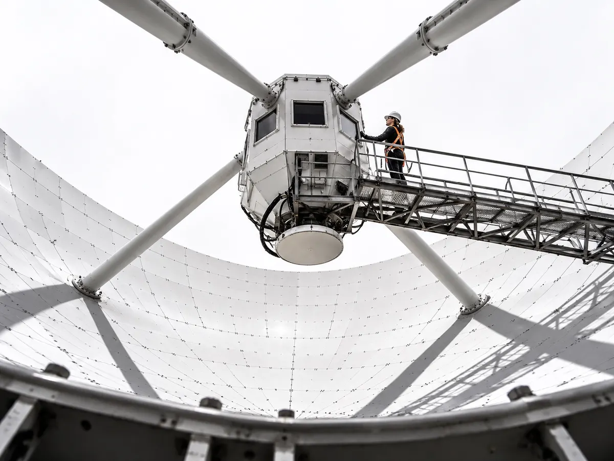
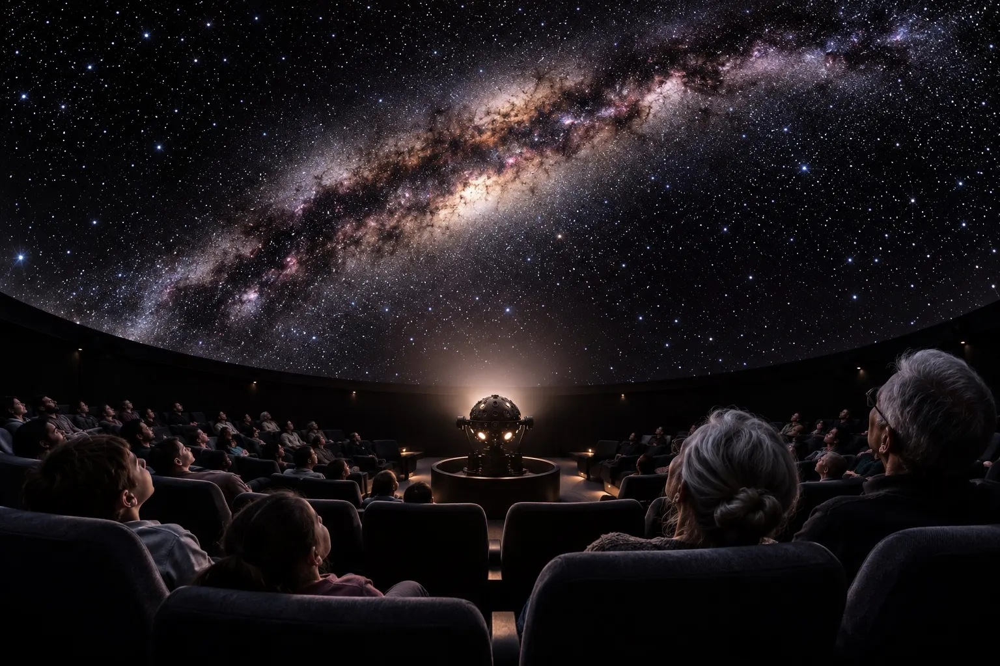
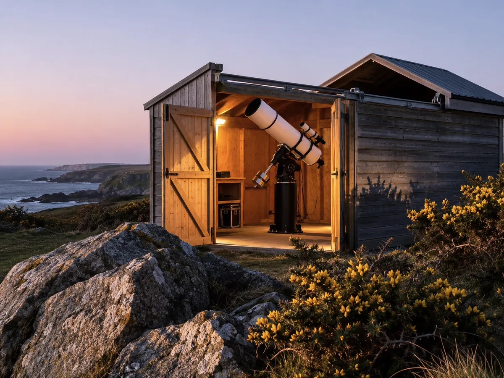
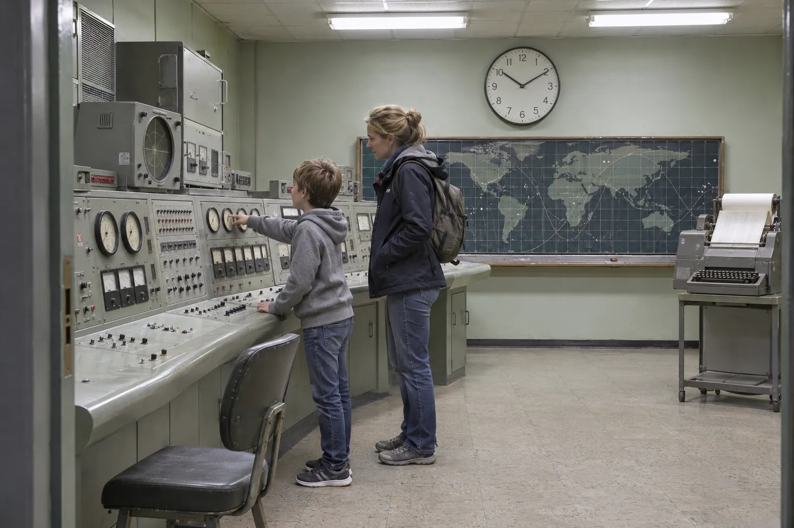

Instruments

Dish One
A 1964 tracking antenna, restored by volunteers to listen to the hydrogen in our own galaxy.
Dish One followed satellites for 44 years. It now points along the Milky Way at 1420 MHz, where cold hydrogen gas gives itself away, and visitors steer it from the dish hut every day at 12:15.
552 steel panels, each set by hand.
Good to about 20 GHz; we use it at 1.4.
A full turn in four minutes.
On a ring of 96 steel balls.

Planetarium
A 9 m dome in the hall that used to hold the station’s receivers.
A star projector rescued from a closing planetarium sits in the middle; two digital projectors round the rim add the planets, and a presenter runs every show live from a desk at the back. The seats tilt back 30 degrees; the front row is kept for wheelchairs and anyone who would rather not tilt.
Aluminium, perforated for sound.
Four wheelchair spaces, front row.
Opto-mechanical, plus two digital projectors.
Every star you could see from a perfect site.

Headland telescopes
A timber shed on the headland whose roof rolls back on rails, and two telescopes that come out of the store.
The 152 mm refractor lives in the shed and takes photographs. On observing nights the 406 mm Dobsonian is wheeled out for the crowd, and a hydrogen-alpha solar telescope shows the Sun’s flares safely in the afternoon.
Dobsonian, the one with the step.
On a concrete pier, for imaging.
Bortle 3. Light from Helston is behind the hill.
By hand crank if the motor sulks.

Control room
The room the station ran from, kept as it was the night it closed.
The consoles still light up. Tours run on the hour, and school groups use the room for a tracking pass flown against the clock, with headsets, checklists and the 1966 intercom.
Original, rewired 1985, restored 2020.
1,106 bulbs replaced so far.
Two years after the dish.
Page 214 of the final log book.
Tilt the dish
From the original general-arrangement drawing. Move the elevation control and the bowl swings about its axis, 16.5 metres up.
Mid-sky: the angle it uses for hydrogen along the Milky Way.
Parked at 90°, pointing straight up, when gusts pass 50 mph. The headland sees that most winters.
The rim would hit the pedestal, so the drives stop it.
Station status · updated by the duty volunteer
Hydrogen survey of the Cygnus arm, week 3 of 6.
New Saturn show running Wed and Sun.
Filter away for recoating; back for the half-term week.
Tours on the hour, 11:00 to 16:00.